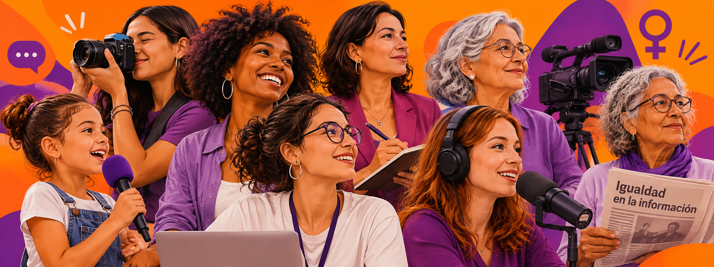

En Cuba la violencia de género es un problema social que exige el compromiso de las instituciones, las organizaciones y la ciudadanía. Frente a esta realidad, la comunicación es una herramienta clave para prevenirla y ofrecer respuestas efectivas.
¿Qué somos?
El Observatorio sobre Violencia de Género en Medios de Comunicación (OVGMC) surge como uno de los resultados del proyecto "No Más: prevención y respuesta a la violencia de género contra las mujeres en Cuba".
"No más…" es una iniciativa impulsada por la Federación de Mujeres Cubanas (FMC), la Editorial de la Mujer, la asociación italiana COSPE, el Centro Martin Luther King, en alianza con el Grupo Galfisa del Instituto de Filosofía y la Unión Nacional de Juristas de Cuba (UNJC); con el apoyo de la Unión Europea en Cuba.
Desde finales de 2024, el proyecto busca contribuir a la prevención y respuesta de la violencia de género en el país a partir de procesos y acciones encaminadas al cambio de imaginarios sociales, el fortalecimiento de la atención a víctimas y la participación de grupos de mujeres en la respuesta territorial. "No más…" se implementa en seis municipios cubanos: Marianao y Plaza de la Revolución en La Habana; Bayamo en la provincia Granma; el municipio cabecera Las Tunas; el municipio El Salvador y Guantánamo, en el extremo suroriental.
El OVGMC de la Editorial de la Mujer constituye una plataforma de monitoreo y análisis del tratamiento mediático de la violencia contra las mujeres, tanto en la prensa como en entornos digitales de los territorios donde se desarrolla el proyecto. En este sentido, permite:
Analizar las narrativas mediáticas sobre la violencia de género.
Proponer indicadores que cuestionen estereotipos y desigualdades.
Generar recomendaciones para un tratamiento comunicativo responsable, evitando la revictimización.
Identificar buenas prácticas en la cobertura del tema.
Autoras del primer corte del OVGMC: Yuset Puig Pupo, Iris Neysi Hernández Rodríguez y Adalys Ray Haynes.
¿Qué monitoreamos?
En 2025 el estudio puso el foco en la Jornada 16 días de activismo contra la violencia de género que comienza el 25 de noviembre, Día Internacional para Eliminar la Violencia contra las mujeres y las niñas, y se extiende hasta el 10 de diciembre, Día Internacional de los Derechos Humanos.
- Las versiones impresas de los periódicos que tienen una frecuencia semanal fueron analizadas las dos últimas ediciones de noviembre y las dos primeras de diciembre de 2025.
- Los canales de publicación digital: Del 25 de noviembre al 10 de diciembre de 2025.
- Radios, telecentros, corresponsalía y Portal Ciudadano: Análisis de las narrativas periodísticas sobre VCM transmitidas del 25 de noviembre al 10 de diciembre de 2025.
La muestra es resultado de una observación y selección profunda del sistema de comunicación social en el ámbito mediático al servicio de los seis municipios incluidos en el proyecto. Definimos así las nueve instituciones mediáticas implicadas pertenecientes a la radio, la televisión, prensa escrita, corresponsalías y plataformas digitales.
Medios por provincia
10 200 min
Radio/TV analizados
25 ediciones
Prensa escrita
340 posts
Medios digitales
¿Quieres encontrarte con los resultados?
Responde esta encuesta. Podrás monitorear tu propio medio de prensa y a la vez comparar tu realidad con la de otros medios.
Contactos
Esta sección está en construcción.
Aquí podrás encontrar los datos de contacto del Observatorio.